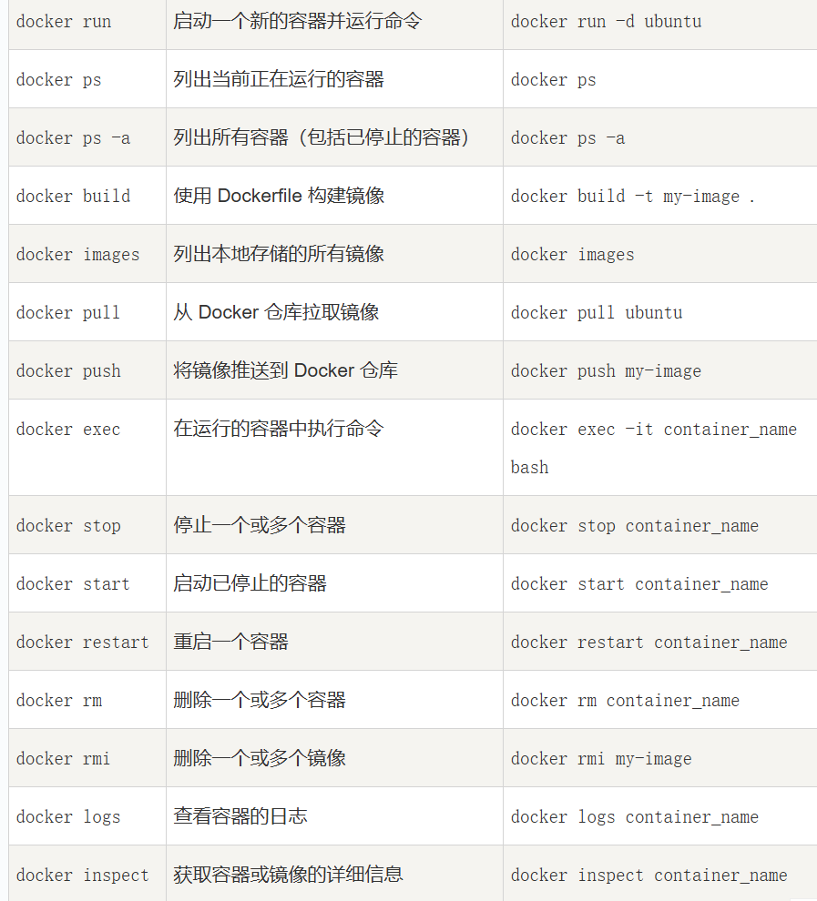
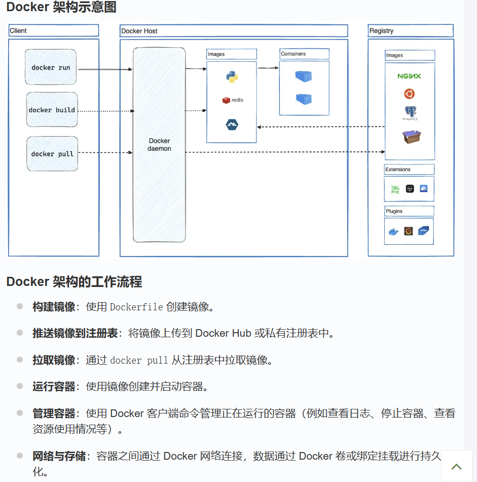
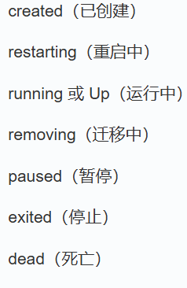

# 命令


-
-d：后台运行容器，例如docker run -d ubuntu。 -
-it：以交互式终端运行容器，例如docker exec -it container_name bash。 -
-t：为镜像指定标签，例如docker build -t my-image .。

# 架构
# Client
常用命令：
run (运行容器), ps (正在运行的容器), bulid (构建镜像)
exec (在容器中执行命令)
# Daemon
Docker 守护进程（通常是 dockerd ） 监听来自 Docker 客户端的请求，并且通过 Docker API 执行这些请求。
负责容器、镜像等 Docker 对象的管理，并根据请求的参数启动容器、删除容器、修改容器配置等。
sudo systemctl start docker //启动，但是通常自启动 |
# Engine API
RESTful 接口，允许外部客户端与 Docker 守护进程进行通信。通过这个 API，用户可以执行各种操作
可以通过 curl 或其他 HTTP 客户端访问 Docker 引擎 API
# Containers
执行环境 ，容器是从 Docker 镜像启动的，包含了运行某个应用程序所需的一切 —— 从操作系统库到应用程序代码。容器在运行时与其他容器和宿主机共享操作系统内核，但容器之间的文件系统和进程是隔离的 ，它是镜像运行的一个实例
# Images
容器的静态只读模板
# Registries
仓库用于存储镜像，最常用的公共仓库是 Docker Hub。可以从 Docker Hub 下载镜像，也可以上传自己的镜像分享给其他人。可以部署自己的私有仓库 。
# Compose
用于定义和运行多容器 Docker 应用的工具
# Swarm
集群管理和调度工具 ，允许将多个 Docker 主机（节点）组织成一个集群
# Networks
允许容器之间相互通信，并与外部世界进行连接
# Volumes
一种数据持久化机制，允许数据在容器之间共享，并且独立于容器的生命周期
# 使用
交互式启动
docker run -i -t ubuntu:15.10 /bin/bash | |
-t: 在新容器内指定一个伪终端或终端。 | |
-i: 允许你对容器内的标准输入 (STDIN) 进行交互。 |
会进入到容器的命令行中，退出命令行会回到当前主机
后台启动
runoob@runoob:~$ docker run -d ubuntu:15.10 /bin/sh -c "while true; do echo hello world; sleep 1; done" | |
//返回容器id，使用`ps`来查看是否在运行 |
ps 返回的状态可能是：

返回中的 PORTS 是端口信息和使用的连接类型（tcp\udp）
使用 docker logs 命令，查看容器内的标准输出（ID 或名称都可以，以下都是这样）。
使用 docker stop 命令来停止容器
使用 docker attach 命令进入后台运行的容器，如果之后退出，会导致停止
使用 docker exec -it 命令进入，则退出不会停止
导入 / 出容器
docker export 1e560fca3906 > ubuntu.tar //导出快照 | |
cat docker/ubuntu.tar | docker import - test/ubuntu:v1 //导入快照 | |
docker import http://example.com/exampleimage.tgz example/imagerepo | |
//从url中导入 |
删除容器
用 rm -f
docker container prune //删除所以终止状态的容器 |
# WEB
docker pull training/webapp # 从公共镜像载入 | |
#training/webapp：它代表了要拉取的镜像的名称。training 是镜像的命名空间或者组织名，webapp 则是镜像的具体名称 | |
#docker images 查看已有镜像 | |
docker run -d -P training/webapp python app.py | |
#-P：将容器内部暴露的端口随机映射到宿主机的一个端口上，外部可以通过宿主机上映射的端口来访问容器内的应用（使用 `ps` 查看映射端口，也可以用 `port`) | |
//固定端口使用-p xxxx:yyyy 从容器的yyyy映射到宿主机的xxxx | |
//python app.py：这是在容器内部要执行的命令，它会启动容器内的 Python 应用程序 app.py |
使用 docker top 查看容器进程（类似于 tasklist）
使用 docker inspect 来查看 Docker 的底层信息 （返回 json 文件）
使用 docker start 来启动已经停止的容器
使用 docker restart 命令来重启正在运行的容器
使用 docker rm 命令来删除不需要的容器（该容器必须先停止）
docker ps -l 查询最后一次创建的容器